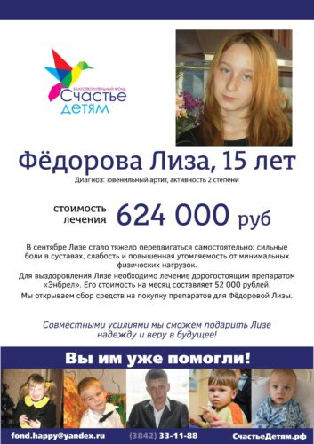
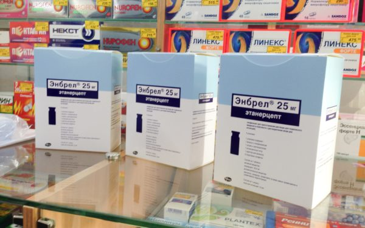

Сегодня вручали препарат Энбрел маме Фёдоровой Лизы. Лизе 15 лет, диагноз ювенильный артрит ей поставили 2 года назад. Сегодня девочка ходит в 9 класс, по словам мамы, из-за лечения «скатилась» в оценках (четвёрка по математике). Живут на Марковцева.

До 13 лет Лизу ничего не беспокоило, потом внезапно начались сильные боли в суставах. Если артрит не лечить, то болезнь будет стремительно прогрессировать и приведёт к инвалидности.
Стоимость одной упаковки препарата — около 26 тысяч рублей. На месяц нужно две таких упаковки. Сегодня на собранные фондом деньги были приобретены 3 упаковки, ещё одну купим в середине января. В рамках программы «Открытая благотворительность» расскажу немного про механику покупки лекарств . По закону благотворительный фонд «Счастье детям» не может оплачивать лекарства с расчётного счёта. Для этого нужна лицензия на фарм.деятельность.

Поэтому каждый раз, когда за счёт собранных фондом средств приобретаются препараты это выглядит так. Сотрудник фонда, чаще всего это директор фонда Наталья Гревцева, идёт в аптеку, с которой есть договорённость, и вместе с родителями, постояв в очереди, покупает лекарства.
Таким образом, мы всегда уверены, что ваши деньги идут именно на лечение. К тому же, по договорённости между владельцами аптек и кем-нибудь из учредителей аптека, в большинстве случаев, даёт фонду скидку. Сегодняшняя покупка Энбрела для Фёдоровой Лизы, к примеру, обошлась фонду не в 26, а в 23 тысячи за упаковку.